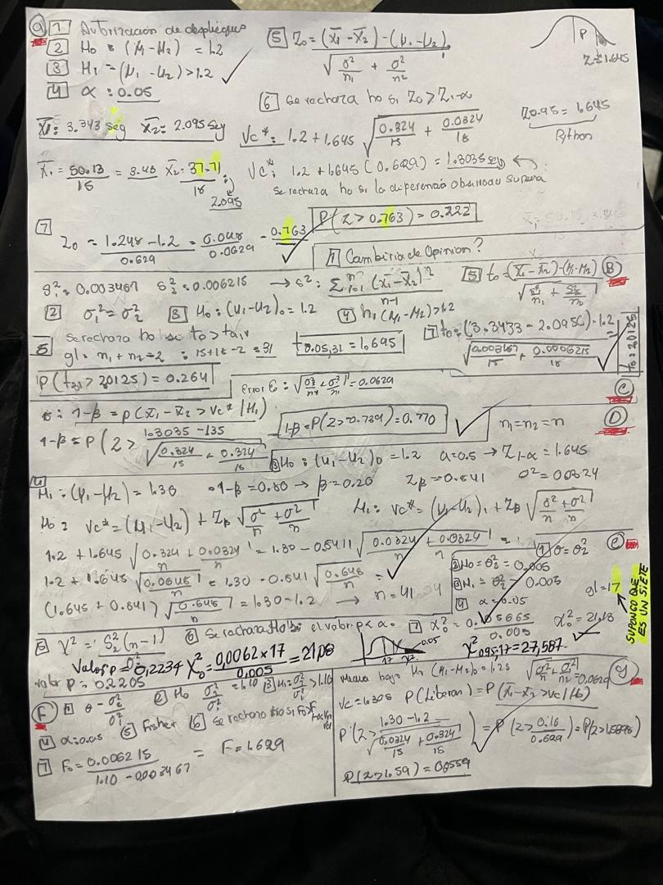

Suite Estadística
Simulador 8 Pasos - Prof. Mejías
Muestra 1
Muestra 2
Datos de la Muestra
Numerador (Muestra 1)
Denominador (Muestra 2)
Galería (exam_1.jpg / exam_2.jpg)


Simulador 8 Pasos - Prof. Mejías

